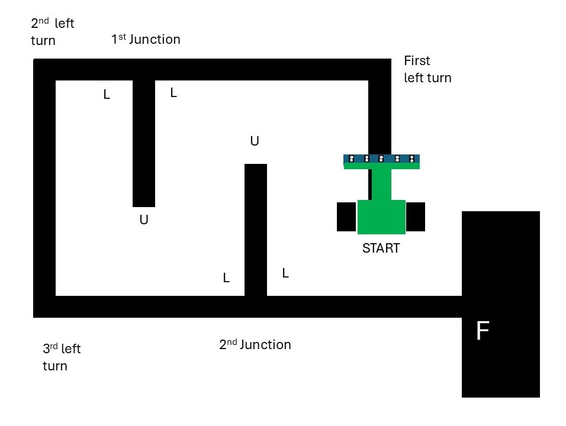
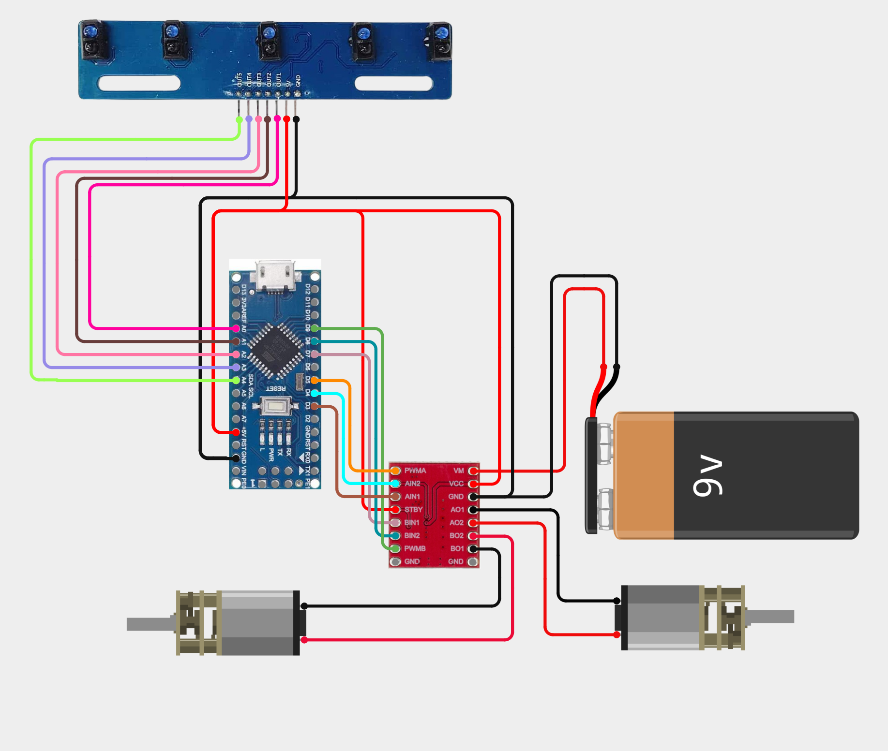
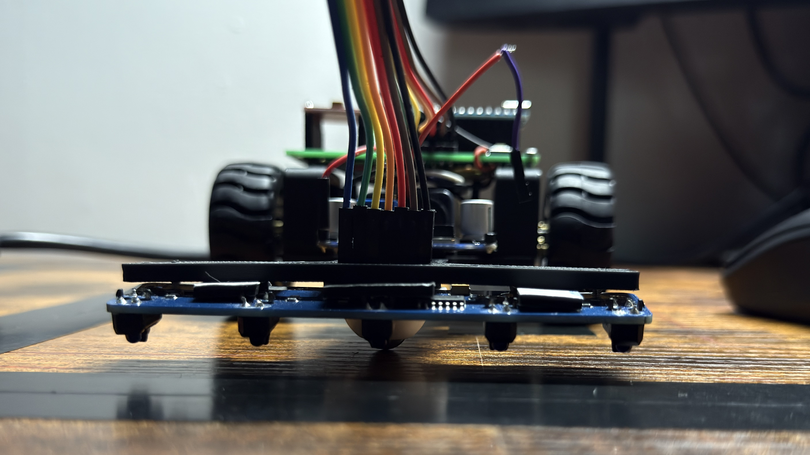
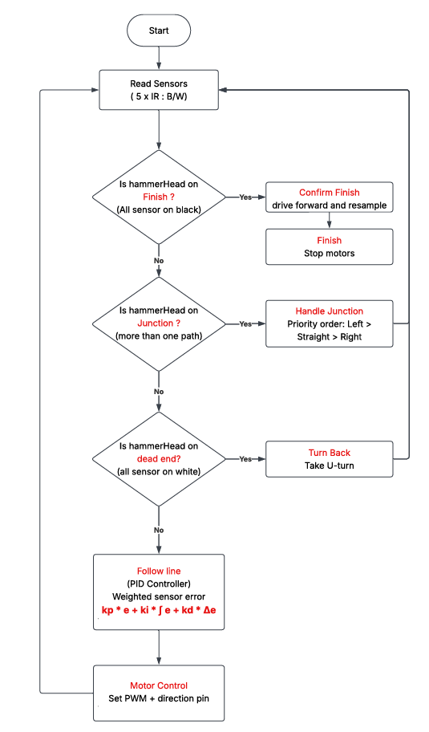
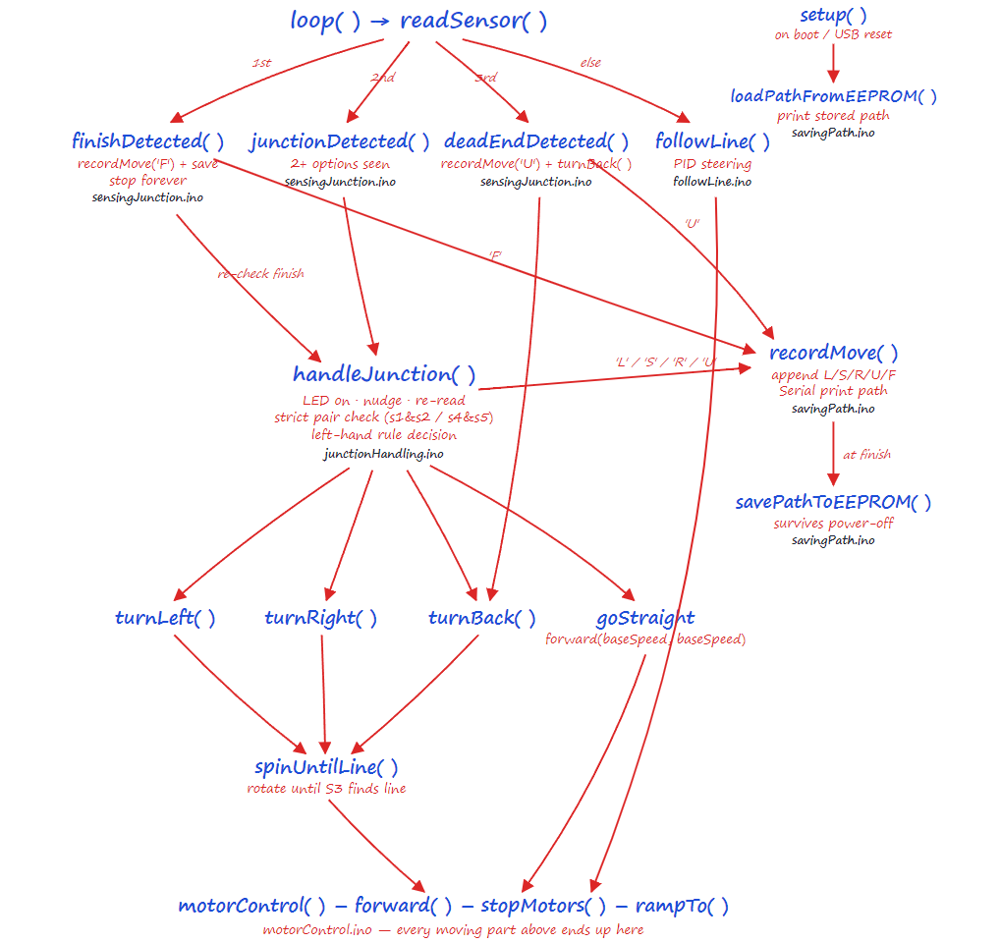
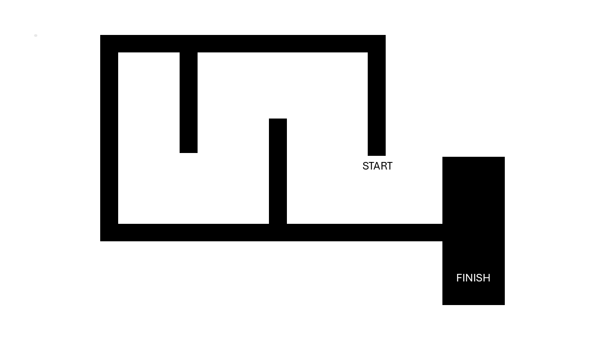

hammerHead — Maze Solving Robot
A differential-drive robot that navigates an unknown line maze on its own. A 5-channel IR array reads the track, a PID loop keeps the robot centred on the line, and a decision layer above it resolves junctions by the left-hand rule, reverses out of dead ends, and confirms the finish before stopping. Built on an Arduino Nano with a TB6612FNG driver and N20 gear motors.
Introduction
Two problems in one robot — staying on the line, and choosing where to go.
Most line followers do one thing: sit on a closed loop and stay centred. hammerHead has to do that and decide, at every branch, which way to go — with no map of the maze and no memory of having been there before. Those are two genuinely different problems, and keeping them separate is the whole design of the firmware.
The lower layer is continuous control: read the line position, compute the error, and apply a PID correction to the two wheel speeds. It runs every cycle and does one job — hold the line. The upper layer is discrete: each cycle it classifies what the sensor array is looking at, and if that pattern is something other than plain line, it interrupts the PID loop and executes a manoeuvre instead — take the left branch, U-turn out of a dead end, or stop at the finish.
Splitting it this way means the PID gains can be tuned once against straight line-following behaviour and then left alone, while the navigation logic is developed and debugged independently. It also means a failure is easy to localise: wobbling on a straight is a gains problem, taking the wrong branch is a decision-layer problem.

Design objectives
- Solve an unknown maze — reach the finish without prior knowledge of the layout.
- Deterministic decisions — the same junction always produces the same choice, so a failed run is reproducible and therefore debuggable.
- Reliable tracking — no loss of line on the tightest curve between junctions.
- No false finishes — a wide junction must never be mistaken for the goal.
- Recoverable — able to reverse out of any dead end and continue.
- Serviceable — sensor board and driver mounted so either can be swapped without a full teardown.
Demonstration
hammerHead running the maze.
What to watch for: This video demonstrates how the decision is made when the bot enciunters junction. Junction is defined as the places in the path where bot has >= 2 options for moving. Look for what bot does when it reaches the junction.
Hardware setup
Bill of materials and why each part was chosen.
| Subsystem | Component | Why this part |
|---|---|---|
| Controller | Arduino Nano (ATmega328P) | Small footprint, 8 analog inputs — the full array reads directly with no multiplexer. 16 MHz leaves plenty of headroom for the control loop plus the decision logic. |
| Line sensor | 5-channel IR reflectance array | Does double duty: the weighted average gives continuous position for PID, and the raw pattern across all five channels classifies junctions, dead ends and the finish. |
| Motor driver | TB6612FNG dual H-bridge | MOSFET output stage — roughly 0.1 V drop versus ~1.5 V on an L298N. Crucially it also handles the rapid full reversals a U-turn demands without overheating. |
| Actuators | 2 x N20 micro metal gear motor | High torque density in a tiny package, and the metal gearbox survives the direction reversals that both PID correction and U-turns demand. |
| Gear ratio | 1:100 | Sets the speed/torque trade-off. Fill in your actual ratio and no-load RPM. |
| Wheels | Dia. 45 x 15 (Width) | Wheel diameter converts motor RPM into ground speed and sets the achievable turn radius. |
| Power | 9 V DC | Must hold voltage under the current spike when both motors reverse simultaneously. |
| Chassis | 3D printed | Rigid enough that the sensor-to-axle distance does not flex during cornering. |
| Caster | ball caster | Third contact point — low friction so it does not fight the differential drive or resist a spin turn. |
Why TB6612FNG over the usual L298N: on N20 motors running at 6 V, the L298N's bipolar output stage wastes around 1.5 V as heat — a quarter of the supply gone before the motor sees it. The TB6612FNG uses MOSFETs and drops roughly 0.1 V, so the motors get nearly full battery voltage, the driver stays cool without a heatsink, and low-speed control near the PWM deadband is far more predictable. On a maze solver that matters twice over, because every junction turn is a low-speed manoeuvre.
Wiring
The sensor array is read on the analog inputs, the driver takes two PWM channels plus direction pins, and the motor supply is kept on a separate rail from the logic supply with a common ground. Replace the pin numbers below with your actual assignments.
| Signal | Nano pin | Goes to |
|---|---|---|
| Sensor 1–5 | A0 – A4 | IR array analog outputs |
| PWMA / PWMB | D5 / D9 | TB6612FNG speed inputs |
| AIN1 / AIN2 | D3 / D4 | Left motor direction |
| BIN1 / BIN2 | D7 / D8 | Right motor direction |
| STBY | D4 | Driver standby — held high to enable |
| VM | — | Battery positive (motor rail) |
| VCC | 5V | Driver logic supply |

Line sensing
Each IR sensor has an LED that generates infrared light, which strikes the surface below and reflections back to a receiver. The amount of reflected light depends on surface color: black surface absorbs most IR and reflects less, whereas white surface reflects more. The receiving photodiode gets different amounts of light based on the surface, and its resistance varies inversely with light intensity-higher IR light produces lower resistance. The arduino reads this as an anlog value, compares it against a threshold, and formats it as a binary digit: 1 = Black line detected, 0 = White surface. For example, when the robot is centered directly over the black line, the five sensors read 11011.
Question 1 — where is the line?
For the PID loop, the five normalised values are collapsed into a single weighted position. Multiplying each sensor value by its index and dividing by the sum gives a continuous estimate of where the line sits under the array — including positions between two sensors, which is what allows smooth proportional correction instead of bang-bang switching.
Question 2 — what am I standing on?
For the decision layer, the same readings are thresholded to a 5-bit black/white pattern. Four patterns matter, and everything else is treated as ordinary line following:
| Pattern | Meaning | Action |
|---|---|---|
| 00000 | All five on black — either a wide junction or the finish pad | Ambiguous — must be resolved by driving forward and resampling |
| 11111 | All five on white — the line has ended | Dead end → U-turn |
| 111xx / xx111 | Line continues left/Right | Take required turn |
| 11011 | Centred on the line | Normal PID following |
The ambiguity that causes most maze-solver failures: a T-junction and the finish pad look identical the instant the array crosses them — all five sensors read black. They can only be told apart by what happens next. This is why the flowchart's finish branch drives forward a short distance and resamples before committing: if line reappears, it was a junction; if the array is still fully black, it is the goal. Getting this wrong in either direction is fatal — stop early and the maze is unsolved, miss it and the robot drives off the far edge.
The second detail that mattered was sensor ride height. A few millimetres too high and the IR spots overlap, so adjacent channels stop discriminating — the position estimate goes mushy and, worse, junction patterns become unreliable. Too low and the robot scrapes on any surface imperfection. Here, hammerHead is built with sensors at exactly 3 mm from path surface.

Control strategy
A discrete decision layer sitting on top of a continuous PID loop.
Every cycle runs the same sequence: read the sensors, test for the three special cases in priority order, and if none of them fire, fall through to PID line following. The ordering is deliberate — finish is checked first because stopping is irreversible, then junctions, then dead ends.
Junction priority — the left-hand rule
At every junction hammerHead takes the leftmost available option: Left > Straight > Right. This is the left-hand wall-following rule, and it is not an arbitrary preference — for any simply connected maze (one with no detached island walls and no closed loops), consistently hugging one wall is guaranteed to reach the exit. It may traverse the entire maze doing it, but it cannot get permanently stuck.
The cost is that it is a blind algorithm — it stores nothing, learns nothing, and will walk into every dead end the maze offers. That is the trade: no memory, no map, no localisation, and correspondingly almost no RAM, in exchange for a guaranteed but non-optimal path.
- Left available → turn left, always, even if straight ahead is clear.
- No left, straight available → continue forward.
- No left, no straight → turn right.
- None of the above → dead end, U-turn.
Why the turn must overshoot the junction: the sensor array sits ahead of the drive axle, so the moment it detects a branch the wheels have not reached it yet. The turn routine has to drive forward by the sensor lead distance first, pivot, then hand control back to PID. Get this offset wrong and the robot pivots early, clips the corner, and loses the line — which then looks like a dead end and triggers a spurious U-turn.
PID tuning procedure
The gains are tuned on a plain looped track first, with the maze logic disabled — there is no point tuning a controller while a decision layer keeps interrupting it.
- Ki = Kd = 0. Raise Kp until the robot follows the line but oscillates steadily.
- Add Kd until the oscillation damps out. Typically an order of magnitude larger than Kp, because the derivative of a per-loop error is a small number.
- Add Ki last, only if there is a visible steady offset to one side. Clamp it — on a maze the error is never meant to be steady, and an unbounded integral winds up on every turn.
- Raise BASE_SPEED and repeat — gains that work at low speed will not hold at high speed.
- Re-enable the maze logic and verify junctions are still detected cleanly at the new speed.
| Parameter | Final value | Effect of increasing |
|---|---|---|
| Kp | fill in | Sharper correction, more oscillation |
| Ki | fill in | Removes steady bias, risks windup |
| Kd | fill in | Damps overshoot, amplifies sensor noise |
| BASE_SPEED | fill in | Faster solve, less margin for junction detection |
| Loop period | fill in (ms) | Must be constant for Kd to be meaningful |
| CONFIRM_MM | fill in | Forward distance before confirming a finish |
Software architecture
Program flow and function structure.
The firmware is written in Arduino C++ and organised as a calibration phase followed by a fixed-period cycle. The flowchart shows the runtime decision order; the call graph shows how the functions depend on each other.


Program structure
- setup() — configure pins, enable the driver, run the sensor calibration sweep.
- calibrate() — sweep across the line, capture per-channel min/max.
- readSensors() — sample all five channels, normalise, threshold to a B/W pattern.
- allOnBlack() / allOnWhite() — pattern tests for the finish and dead-end branches.
- confirmFinish() — drive forward, resample, disambiguate finish from junction.
- junctionDetected() — identify which branches exist at the current node.
- handleJunction() — apply Left > Straight > Right and execute the turn.
- turnBack() — 180° pivot to reverse out of a dead end.
- readLinePosition() — weighted position for the PID loop.
- computePID() — error, clamped integral, derivative, weighted sum.
- driveMotors() — map signed speeds onto TB6612FNG direction pins and PWM.
- loop() — enforce the fixed cycle period and chain the above in priority order.
Source code: the complete Arduino sketch, wiring table and tuning notes are in the repository — github.com/DhanPrasad/hammerHead.
Mechanical design & assembly
Chassis layout, geometry, and the CAD model.
The chassis was modelled in CAD before anything was cut, so that the sensor offset, wheelbase and centre of mass could be set deliberately rather than discovered afterwards. On a maze solver the geometry is not just a handling question — it directly determines whether junctions are detected correctly.
- Array width — must span wider than the line so that a side branch actually lands under an outer sensor. Too narrow and junctions are simply invisible.
- Sensor lead distance — how far ahead of the drive axle the array sits. This is the distance every junction turn must compensate for, so it needs to be a known, fixed number.
- Wheelbase and track width — set the minimum turn radius, and whether the robot can pivot in place cleanly for a U-turn.
- Centre of mass — kept low and biased toward the drive axle so the wheels stay loaded and do not slip during a pivot.


| Dimension | Value | Note |
|---|---|---|
| Overall L × W × H | fill in | Footprint |
| Wheelbase | fill in | Axle to caster |
| Track width | fill in | Wheel centre to centre |
| Sensor array width | fill in | Outer sensor to outer sensor — sets junction detection |
| Sensor lead | fill in | Array ahead of drive axle — turn compensation |
| Sensor ride height | fill in | Critical for channel discrimination |
| Mass (with battery) | fill in | Affects achievable acceleration |
The maze
The layout hammerHead was developed and validated against.

Describe the maze here: line width, surface material, overall dimensions, number of junctions and dead ends, tightest curve radius, and the size of the finish pad. Two properties matter most for whether the left-hand rule is guaranteed to work — whether the maze is simply connected (no closed loops), and whether the finish pad is distinguishable from the widest junction.
Results & reflections
What worked, what did not, and what I would change.
| Metric | Result |
|---|---|
| Solve time | fill in |
| Junctions handled correctly | e.g. 12/12 |
| Dead ends recovered | fill in |
| False finishes | fill in |
| Completion rate | e.g. 9/10 runs |
| Top stable speed | fill in |
What I would do differently
- Add path optimisation. The biggest single upgrade: record the turn sequence on the first run, then simplify it by collapsing every dead-end excursion (L,B,L → S and similar substitutions). The second run then drives the shortest path directly. This is the standard follow-up to a left-hand-rule solver and needs no extra hardware.
- Wheel encoders — closed-loop wheel speed would make the turn and confirm-forward distances repeatable as the battery discharges, instead of drifting with voltage.
- Wider sensor array — more channels would give earlier and less ambiguous junction detection, and shrink the finish-versus-junction grey zone.
- Serial telemetry — log position error and detected pattern over serial and plot it, rather than tuning and debugging by eye.
- Dedicated 5 V regulator for logic, so the current spike from a U-turn cannot brown out the Nano mid-decision.
Biggest lesson: replace this with the one thing that surprised you most — those are the sentences readers and interviewers actually remember.
Files & downloads
Drawings, datasheets and CAD.